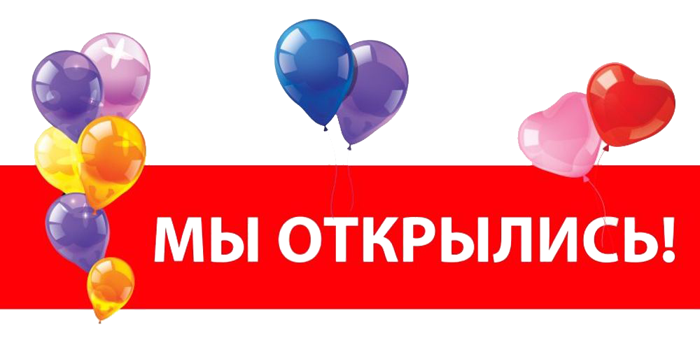

Окунитесь в атмосферу, где традиции встречаются с современностью. Мы готовим из того, что растет, цветет и созревает прямо здесь, в нашем регионе.
В сердце нашего зала стоит большая дровяная печь. Это не просто декорация. Мы томим в ней каши, запекаем мясо по старинным рецептам и печем ремесленный хлеб, аромат которого чувствуется еще на подходе к ресторану. Огонь дает блюдам тот самый вкус «из детства», который невозможно повторить на обычной плите.
Наша фишка: Попробуйте наш фирменный «Чай из самовара на еловых шишках» и десерты с использованием локальных дикоросов — это вкус, который невозможно забыть.
«Мы верим, что лучшая еда — та, что выросла под нашим солнцем. В [Название ресторана] мы не просто кормим, мы возвращаем моду на родную кухню, делая её понятной, современной и невероятно вкусной для каждого гостя».